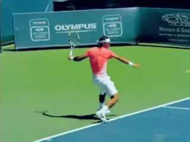
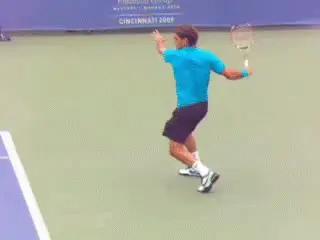
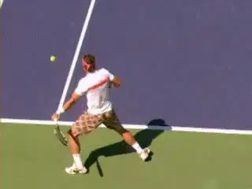
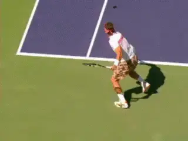
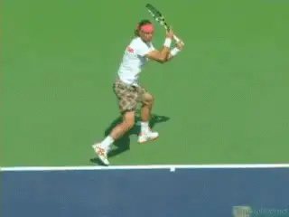
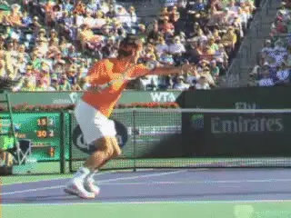

The myth of the Recovery Step:¶
Forehand
John Yandell
Movement is critical at the highest levels of tennis, and at all other levels as well. The modern game, played now primarily in the back court, is a continuous flow of motion, out to the shot, through the shot, then back in the direction of the next shot.

What is a recovery step and when should it happen?
The recovery step is part of this continuous flow on a high percentage of balls. This is the step in which the foot closest to the ball swings around the body to the outside, plants, and then pushes back to the middle, usually with a crossover step or even two crossover steps at the high levels.
The old paradigm of moving to the ball, setting up in a stationary stance, hitting, then shuffling back to the middle to a stationary ready position no longer applies. If it ever did.
But a common myth in coaching is that, because of the speed of the game the recovery step should start as early as possible and can actually be viewed as part of the forward swing. According to this theory, the outside foot should begin to swing around as the body rotates into the shot, causing the recovery to begin more rapidly.
Supposedly this "advanced" footwork makes players a step quicker covering the court. Some coaches go even further. They claim this earlier rotation of the body actually "improves" the stroke by adding more racket speed.

The back foot can actually move backwards behind the front foot before swinging around.
Recovery steps are integral in pro tennis, and can be used effectively at all levels. But what shape do they actually take and when do they actually occur?
As with so many technical issues, the answers are surprising when we look at high speed video of the top players. In this article let's take a look at the actual sequence of the recovery steps on the forehand, including movement in several directions. Then in the next article we can do the same for the backhand.
The Myth of Early Recovery
High speed video shows that the belief in "early" recovery steps is a myth. The reality is that the top players only begin the recovery when the forward swing is complete.
In fact, rather than swinging the foot around top players often move the "recovery" foot backwards during the swing. That's correct, the outside foot can first move in the opposite direction.
Why? To preserve the proper sequencing of the stroke and especially, the body rotation. The reality is that taking the recovery step too early can destroy the timing of this key rotational sequence, no matter what you may have heard about it's benefits.
Let's examine the actual patterns of the recovery step. Let's see how when players are moving to various parts of the court, starting with less extreme movement and then looking at more radical patterns.

The outside leg stays in line with the torso until the extension is complete.
As we have seen many times in our various studies of the pro forehand, the majority of shots are now hit with one or both feet in the air, due to the increased contact heights generated by the incredible spin levels in the pro game.
This elevation of the feet may have contributed to the myths surrounding the recovery steps, since the outside foot is so often off the court during the hit. But look closely at the Federer animation.
Federer sets up in an open stance and explodes upward into the shot. The rear foot comes off the court, but stays in line with the torso until the extension of the forward swing is complete. This is the point where the racket reaches it most forward and or upward position.
The leg and foot basically stay aligned with the right outside edge of the torso. In this example, if anything, the outside, right foot actually turns slightly backwards away from the direction of movement. We'll see other examples where it is much more pronounced.
The fact is the actual recovery step does not begin until the racket starts to move backwards and downward, what is usually called the wrap. This is final deceleration phase of the swing.
Let's see the sequence. As Roger starts to descend out the air the right foot finally begins to swing around. It then lands, clearly to the right of the torso, but again long after the forward swing is complete. This landing provides the foundation for the push off or the crossover step across the body as Roger starts to move back toward the center of the court.

Look at the position of the racket and the outside foot prior to the recovery step.
This basic sequencing is fundamentally similar in a wide range of movement patterns, though, as we will see, not in all, including one of the most common positionings to hit inside balls. The stances may vary, the actual number of cross steps may vary. But the timing of outside swing of recovery step after the forward swing is a constant.
Running Open Stance
Which patterns does this recovery pattern apply on? Let's look at a running forehand hit off an open stance by Rafa Nadal.
The lower ball in turn results in a wider base or distance between his feet as he moves to the shot. But look at the lower leg and the outside foot.
Nadal is hitting a typical reverse finish which will travel over his head and back to his left side. But the correlation with the extension and the leg position is the same as in the Federer example above.
Note that at point where the racket is starting to move backwards in the overhead wrap, the lower left leg and foot are still perpendicular to the court. The foot starts to come around in the recovery step only after the forward swing is complete.
The outside foot is definitely swinging quite far around, breaking his movement. It also sets him up to push off back to the middle. But the timing is the important point. Nadal is not initiating the swinging recover step until the forward swing is complete.
Running Closed Stance

Look at the position of the "recovery" foot after the hit on this closed stance running forehand.
When we look at a more extreme version of the running forehand, we see the exact same point, but with the timing of the recovery swing step delayed even more. After the hit the rear leg is actually extended backward parallel to the baseline!
In this instance, the recover step is truly critical. Watch how far it swings around. Watch Nadal's foot actually skid on a hard court. Look at the force of his push back to the middle!
But there is no way he could possibly swing the back foot around during the swing and still make this ball. The rear or "recovery" foot is actually behind his body when he finishes the forward swing and the racket is starting to reverse.
Moving Back
Now let's look at two more common court positionings on the forehand and see how the recovery step functions there. These are when the players are moving back, and also when they are playing inside.
When players move backwards away from the baseline, we often see the same basic pattern we saw above. The outside foot either goes directly upward with the body in the forward swing, or it crosses backwards behind the other leg.
In both of these cases, once the forward swing is complete the outside foot eventually moves around to become the recovery foot for the push back.

Two options when players move back, with landings on either foot!
But in other cases when the players move back, the spining torso rotation into the ball is so extreme that rather than landing on the outside foot, players can actually land on the opposite foot. Watch Novak in the animation. The front foot actually lands first and creates the push off to prepare for the next shot.
Inside Forehands
On inside forehands the players are typically moving to their left to get around the ball, or are already set up inside. Here we see a different pattern recovery pattern altogether on most balls.
Because they are not moving to their right, there is not the same need for radical breaking of the momentum traveling in that direction. In most cases, the alignment of the feet stays within the torso throughout the entire stroke pattern, including the wrap.
The back right foot can actually kick back substantially, and the landing can be on the left foot instead of the right. Only then does the right foot swing around. There is no outside recovery step.
The Conclusion?
So what does all that mean? There are a few implications. First the recovery steps are necessary to control the forces generated by high level movement.

The recovery step logic doesn't apply when players move inside.
Previously, we have published brilliant, detailed articles from David Bailey on the whole range of footwork patterns--including the recovery steps. (Click Here.)
But one commonality emerges from his work, as well as this study. In general the sequence is the completion of the forward swing, then the recovery. Players are literally executing their strokes in the air--even while moving through the air--but the strokes are separate from the recovery.
Many players, especially those with athletic backgrounds in other sports, will naturally create the right patterns with the right steps at the right times. When they don't it can be necessary to intervene with video analysis and help them model footwork patterns, including recovery steps.
But these patterns need to be based on what actually happens, not what coaches think is happening or think is more advanced. That's the reason we have something called Stroke Archives on Tennsiplayer right? The ultimate data base for investigating the truth.
Stay tuned for an analysis of the same misconceptions on the backhand side!

John Yandell is widely acknowledged as one of the leading videographers and students of the modern game of professional tennis. His high speed filming for Advanced Tennis and Tennisplayer have provided new visual resources that have changed the way the game is studied and understood by both players and coaches. He has done personal video analysis for hundreds of high level competitive players, including Justine Henin-Hardenne, Taylor Dent and John McEnroe, among others.
In addition to his role as Editor of Tennisplayer he is the author of the critically acclaimed book Visual Tennis. The John Yandell Tennis School is located in San Francisco, California.